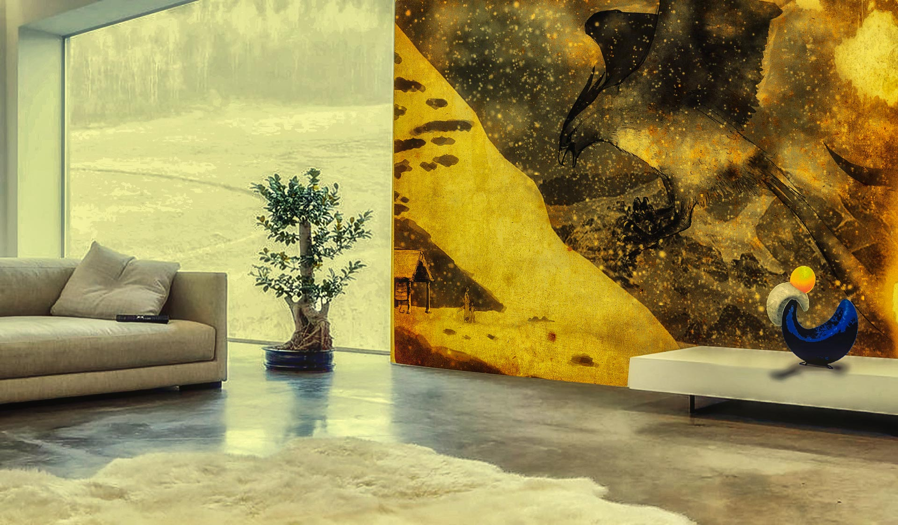
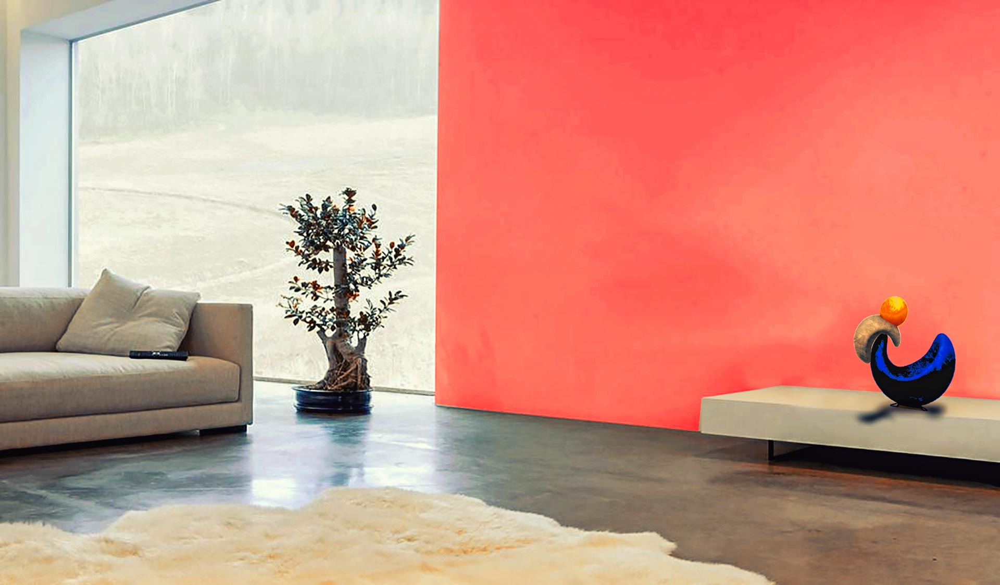
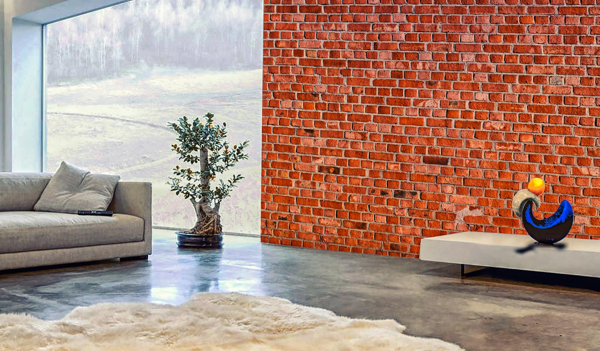

Utilidades
Vidro
Nada mais inovador do que a sensação de transparência, a luz entrando e irradiando, um belo céu estrelado à luz da lua ou mesmo a sensação da chuva. Com os anoobots você cria a sensação que preferir.
Personalizadas
Caso nenhuma de nossas cores ou texturas lhe agradem oferecemos a opção de personalizar suas cores ou texturas, coloque a cor que mais marcante de sua vida ou coloque a foto mais marcante de sua vida com os Anoobots reproduzirão com perfeição suas recordações.
Função Internet
Caso você seja um aficionado por tecnologia Anoobots convertem sua parede num verdadeiro sistema tecnológico com vídeos, interação à Internet, reprodução de áudio com um sistema único que lhe trarão a sensação de estar dentro do seu filme favorito ou no show da sua banda favorita.
Papel de parede
Caso você queira a sensação de ter uma cor já definida pelo nosso sistema ou uma das inúmeras texturas, seja uma parede viva, até mesmo uma parede de tijolos, você tem a opção de utilizar o modo papel de parede. Com esse modo com uma inúmera gama de possibilidade criadas pelos nossos designers e decoradores sua casa sempre ficará com um ar confortável sem perder o conforto e a sofisticação.
 